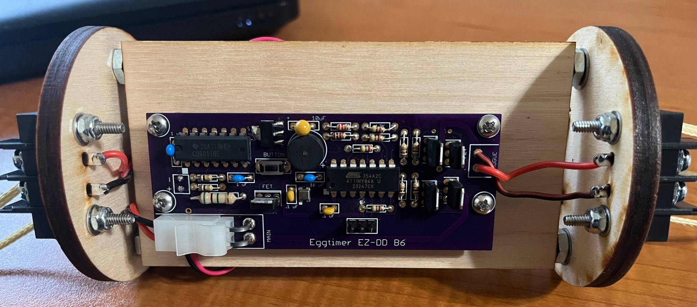

Aerospace · Telemetry
Oct 2024 – Present
InSpace Model Rocketry
- Linking in-flight sensor behavior to composite airframe deformation and thermal gradients.
- Designed a dual XBee Zigbee wireless telemetry stack for real-time high-altitude launches.